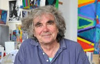

The Angelo Art Gallery’s collection of paintings spans more than 60 years and styles range from classic to modern. We also hold an exhibition of an up and coming local artist each and every month. Thanks to the budding young talent in our local area these events are always popular. No ticket required just arrive on the day.
The building that houses the gallery opened its doors to the public in 1996 for the Northamptonshire Fine Art Exhibition inspired by the Great Exhibition in London of 1851. In 1996 it became the Angelo Art Gallery.
The Angelo Art Gallery holds the largest collection of work by local talent, showing many of these paintings and sketches alongside loans from other larger galleries.
About Carter Angelo

Carter Angelo is an art gallery owner known for an instinctive eye and a quiet authority in the contemporary art world. With a background steeped in both classical technique and modern experimentation, Carter curates spaces that feel intentional rather than intimidating—places where art invites conversation instead of demanding reverence. Their gallery is recognized for championing emerging voices alongside established artists, often blurring the line between risk and refinement. Thoughtful, measured, and deeply committed to the power of visual storytelling, Carter Angelo has built a reputation not just as a dealer of art, but as a cultivator of culture.
Karen Rose
Karen Rose was born in Oxford in 1956 and lived in South Africa for most of her teenage years before returning to Northampton in 1979. She now paints and holds art classes in Oundle and visits France as often as possible. Karen’s years in South Africa had a profound effect on her work; the sumptuous colours of the landscapes, the skies and the people of the country are reflected in the opulence and vibrancy of her paintings. As she explains: “I find everyday life so crowded with irresistible images and impressions I feel almost overwhelmed, it is far more frustrating not attempting to paint all these images than going through the actual process of making them.” Many of her paintings are semi-abstract celebrations of light, texture and colour.
As our largest and main artist, we have many of her works on sale